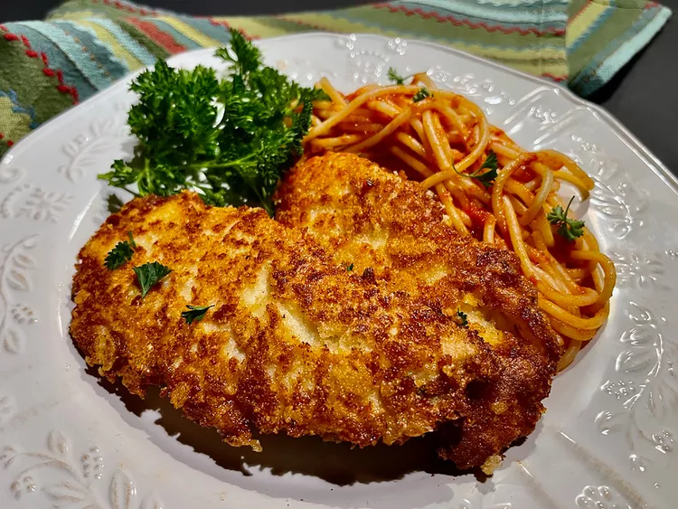

Crusted Chicken Romano

This copycat crusted chicken Romano proves that you don't have to go out to enjoy these chicken tenderloins—you can prepare them at home!
This copycat crusted chicken Romano proves that you don't have to go out to enjoy these chicken tenderloins—you can prepare them at home!
Ingredients
- 1 1/2 pounds chicken tenderloins
- salt and pepper to taste
- 2/3 cup all-purpose flour
- 2 large eggs, lightly beaten
- 1 cup pecorino Romano cheese
- 1/3 cup grated Parmesan cheese
- 2/3 cup plain panko breadcrumbs
- 8 ounces spaghetti
- 1/4 cup olive oil
- 2 tablespoons unsalted butter
- 2 cups marinara sauce
- 6 small fresh parsley sprigs for garnish (optional)
Steps
- Place chicken tenderloins between 2 sheets of heavy plastic on a solid, level surface. Firmly pound chicken with the smooth side of a meat mallet to a 1/4-inch thickness. Lightly season chicken with salt and pepper.
- Set up dredging stations by placing flour on a plate, then set a shallow bowl with beaten eggs beside it. Finally, combine grated pecorino, Parmesan, and breadcrumbs on a plate at the third station.
- Dredge each tenderloin in flour, shaking off excess, then dip in egg, allowing excess to drip off. Place on top of cheese and panko mixture, patting it into chicken until well coated. Set each piece on a plate until all are dredged and breaded.
- Meanwhile, bring a large pot of lightly salted water to a boil. Cook spaghetti in the boiling water, stirring occasionally, until tender yet firm to the bite, about 12 minutes.
- Heat olive oil and butter in a large skillet over medium-high heat until butter stops sizzling, then add breaded chicken tenderloins, being careful not to overcrowd the skillet. You may want to cook chicken in batches.
- Cook tenderloins until nicely browned, 3 to 4 minutes per side. An instant-read thermometer inserted near the center of chicken pieces should read at least 165 degrees F (74 degrees C).
- Remove chicken from the skillet and place on a rack over a plate or tray and keep warm, until all tenderloins are done.
- Drain spaghetti, return to the pot, and stir in marinara. Cook over medium-low heat, stirring occasionally, until spaghetti and sauce are hot, about 2 minutes. Remove from heat.
- Evenly divide the tenderloins and spaghetti with marinara on four plates. Garnish with fresh parsley sprigs.